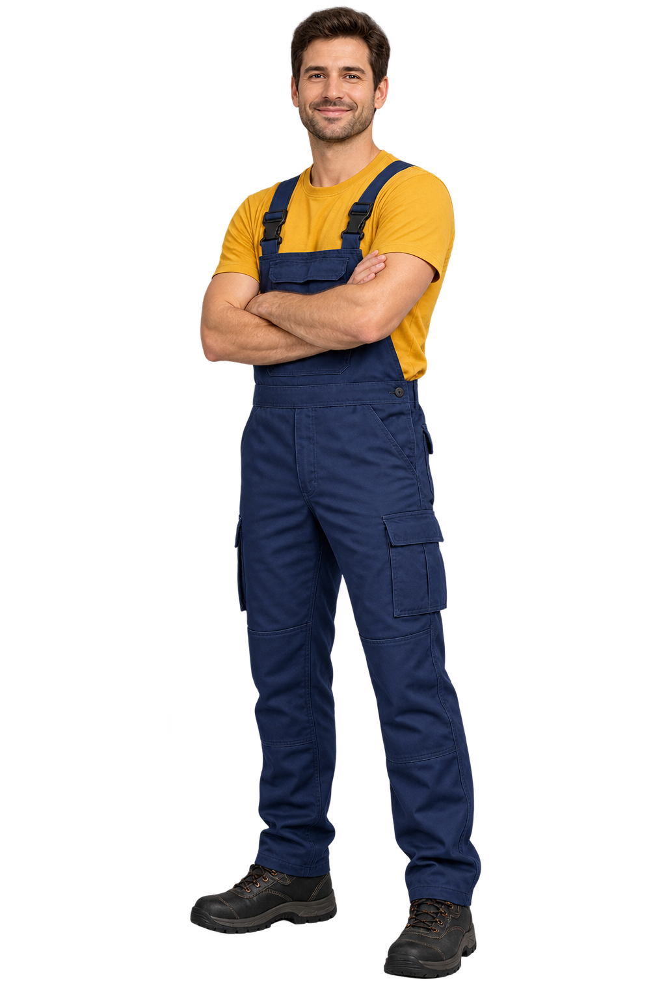
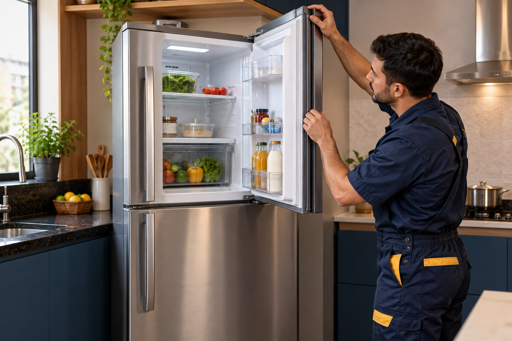
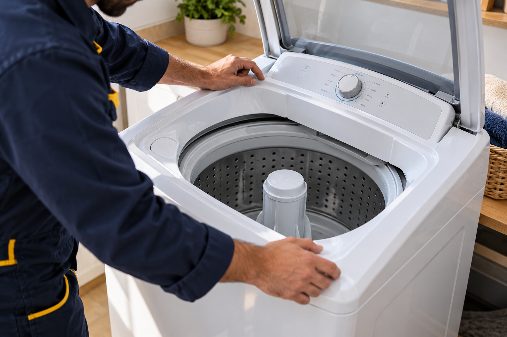
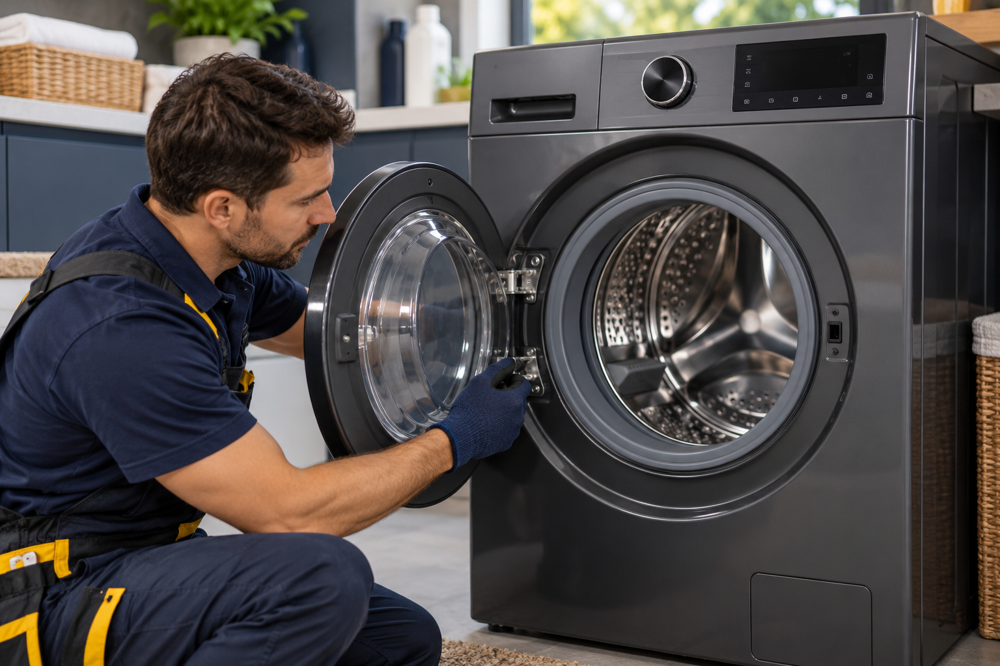
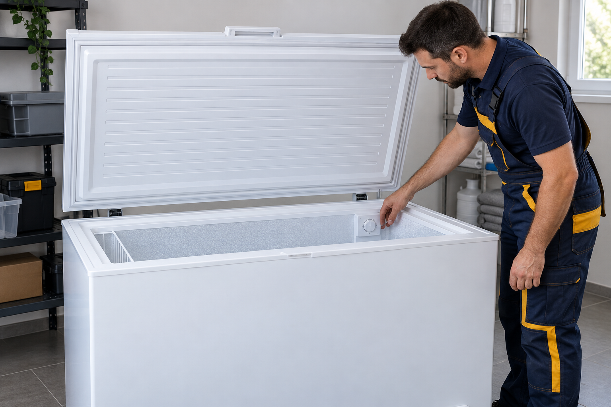
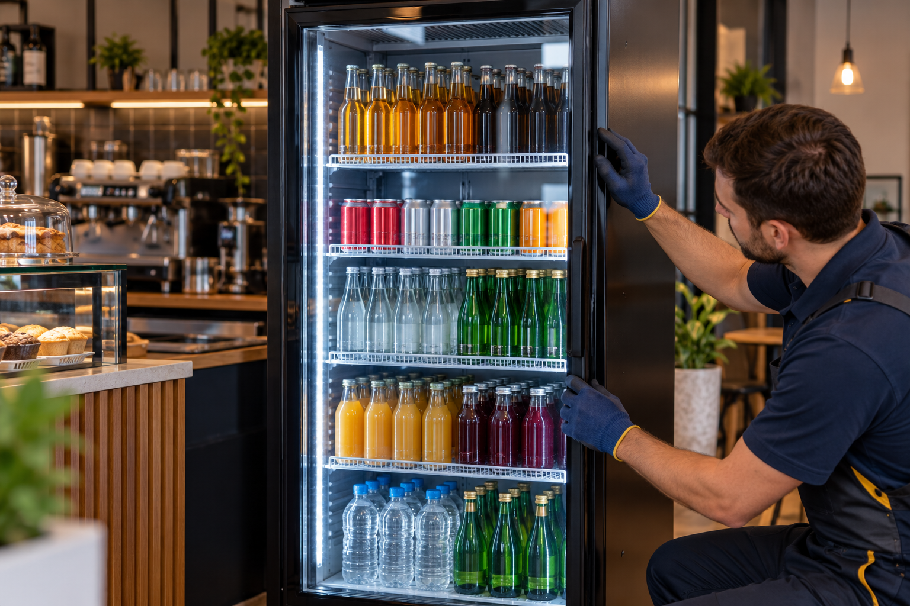
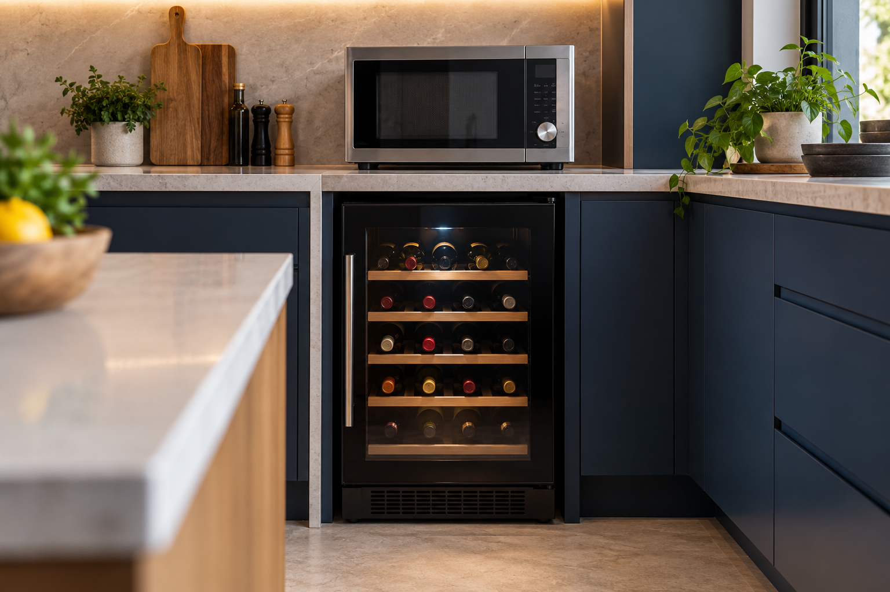

Experiência & cuidado
Diagnóstico preciso e cuidado com seu aparelho.
Seu conforto em boas mãos
Assistência técnica em Itu e região. Cuidamos do seu eletrodoméstico no local, com a praticidade que sua rotina precisa.
Diagnóstico preciso e cuidado com seu aparelho.
Mais praticidade, sem precisar transportar seu aparelho.
Serviço explicado antes de aprovar o reparo.
Quem somos
A Bem Gelar cuida dos aparelhos que fazem parte da sua rotina. Realizamos diagnóstico e manutenção em sua residência, com atendimento próximo e soluções para refrigeração e linha branca.
Cuidado em cada atendimento
Atendimento
especializado
Cuidado com
seu aparelho

Nossos serviços
Manutenção e conserto de diferentes marcas e modelos. Conheça os aparelhos atendidos e agende uma avaliação.






Onde estamos
Conte com a Bem Gelar para cuidar do seu eletrodoméstico. Consulte nossa localização e fale com a equipe para agendar seu atendimento.
Nosso endereço Rua Antonio Ribeiro de Camargo Penteado, 280Segunda a sexta: 08h às 18h
Sábado: 08h às 12h
Bem Gelar Refrigeração · Jardim Aeroporto, Itu